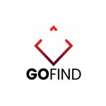

|
I am a recent BA graduate from the University of California, Berkeley where I majored in Applied Mathematics with concentrations in financial engineering and machine learning. I am originally from John's Creek, Georgia and love playing football, basketball, volleyball, chess, and poker! My interests lie in quantitative & mathematical finance,computer vision & deep learning research, sports analytics, data science, and fundamental investment research. I am currently looking for full time jobs, internships, and research positions. Throughout my four years at UC Berkeley, I have worked at many different organizations and even started my own - Diascan. Most recently, I worked at Main Management, an asset management firm, doing primarily quant research. I've also previously worked at Kiwi Robotics, GoFind, and The Associated Students Organization of UC Berkeley. On campus, I was involved in Theta Delta Chi and the Quantitative Investing Club @ Berkeley. |

|
|
Math: Multivariable Calculus, Linear Algebra & Differential Equations, Optimization, Proof Based Linear Algebra, Real Analysis, Numerical Analysis, Complex Analysis, Honors Abstract Algebra Computer Science: Discrete Math & Probability, Structure & Interpretation of Computer Programs, Data Structures, Data Science & Machine Learning Financial Engineering (Graduate Level): Financial Engineering I - Financial Mathematics, Financial Engineering II - High Frequency Trading, Portfolio Theory & Optimization |
|
I have worked at multiple organizations, primarily working with machine learning and data science. |
|
Quantitative Research Intern San Francisco, California February 2019 to February 2020 I primarily built prediction models using alternative data sources to generate signals for when to buy and sell exchange traded funds. I also developed a tool which scraped historical ETF data from FactSet and Yahoo Finance and exported elegant reports with various different information such as metrics, valuations, and ratios. This tool reduced firm's ETF report creation from around two hours to less than thirty seconds. Utilized Python, PyTorch, SQL, Sci-Kit Learn, Pandas, Seaborn, Matplotlib. |
|
|  |
Machine Learning and Product Intern Berkeley, California Jan 2018 to May 2018 At gofind.ai, I helped develop their license plate detection application. The first portion of my work was building the detection model, and the second part was building the character recognition script. The detection model was built using YOLOV2 in tensorflow and would detect bounding boxes of license plates in images and videos of cars. The character recognition script would then take in the license plates found in the detection model and output a text file with the license plate numbers. I also solely worked on the design and wireframing of the application. Utilized Python, YOLO, TensorFlow, Sci-Kit Learn, OCR, Pandas, OpenCV. |
 |
Autonomous Driving Research Intern Berkeley, California May 2018 to August 2018 I collaborated with a development team of four to collect, filter, transform, and analyze over twenty hours of streamed video data from Kiwi Robots in order to help the robots navigate crosswalks autonomously. My project was to predict steering wheel and throttle of the delivery robots by implementing the Stanford paper, Self-Driving Car Steering Angle Prediction Based on Image Recognition, on the data my team collected. Following the paper, I built two different models in PyTorch. The first model comprised of 3D convolutional layers followed by LSTM recurrent layers. The second model used transfer learning with 2D convolutional layers on a pre-trained model where I only retrained the fully connected layers. Utilized Python, Pytorch, Convolutional Neural Networks, LSTM, Sci-Kit Learn, Pandas, OpenCV. |
 |
Data Science Consultant San Francisco, California May 2018 to June 2018 I worked with the Head of Product @ Lime, Colin McMahon, on a one month long project. The project was to help Lime precisly identify places in San Francisco where tourist activity was high. I used the Flickr API in order to pull around fifty thousand different location points (latitude and longitude) of images specifically taken from tourists in San Francisco. I then clustered the location points on a virtual map to help Lime choose which areas to expand too and increase bike capacity. You can check out the clustering here! Utilized Python, Pandas, OpenCV, Sci-Kit Learn. |
 |
Co-Founder and Chief Technology Officer Atlanta, Georgia June 2015 to July 2019 I started Diascan in the summer of 2015. Diascan was a software that used deep learning and computer vision to help radiologists more accurately
detect and diagnose lung cancer from medical imagery. As the technology lead, I built the machine learning pipeline. The pipeline had two parts. The first
part was a SSD object detection model that would return bounding boxes of tumors found in CT scans. The second part of the pipeline was a
classification model that would classify whether or not the tumor found in the first part of the pipeline was benign or malignant.
Utilized Python, Pytorch, Convolutional Neural Networks, LSTM, Sci-Kit Learn, Pandas, OpenCV.
|
{kind=link}
|
|
|
A Comparative Analysis of Machine Learning Models for Breast Cancer Classification
CS 198 - Machine Learning and Data Science (Final Project) Paper / Code Using data from the Breast Cancer (Diagnostic) Data set, we built machine learning models to classify breast mass instances as benign or malignant. We used five machine learning models - SVM, Random Forest, Logistic Regression, Decision Trees, and a Neural Network. For each model, we incorporated hyper-parameter tuning and cross validation. |
|
Q Learning for Optimal Trade Execution
IEOR 222 - Financial Engineering II (Final Project) Paper / Code Optimal Order Execution has been a long standing problem in financial institutions. There are many ways to tackle this issue; however, the backbone of all the solutions was a strategy laid out by Dimitris Berstsimas and Andrew Lo in the paper Optimal control of execution costs. The goal of the final project was to use reinforcement learning, specifically Q Learning, in order to learn the optimal order execution strategy under various price impact models that was laid out in Bertimas and Lo's paper. |
|
Cal Baseball: Clubhouse Analytics
IEOR 185 - Startup Challenge Video / Presentation Worked with the Cal Baseball team to develop an easy to use interface for coaches and players to view and analyze various different sabermetrics (baseball statistics). I was in charge of data engineering and analysis. I also developed statiscal applications that the team could use such as lineup optimization and in-depth analytical scouting reports. |
|
Personal Investing: Stock Pitches
NetEase Long Thesis / Nvidia Short Thesis I have been very interested in investement research. I have written couple of investment pitches for positions in my portfolio. Specifcally, I wrote a long thesis on NetEase and a short thesis on Nvidia. On another note, since January 2020, my portfolio has beaten the S&P 500 benchmark index by 11%. Portfolio has returned 26.64%, whereas S&P 500 has returned only 15.16%. |
|
Instacart APM Challenge
Report / Feature Presentation Material I wrote and designed for the Instacart APM challenge. |
|
Design and source code from John Barron's website. |